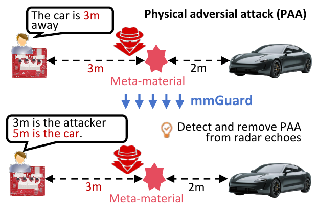
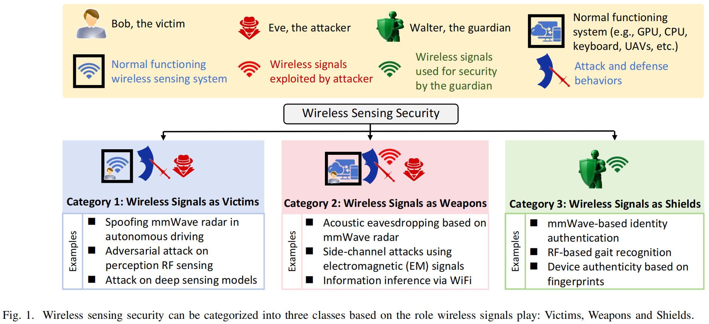

Hi! I am currently a Postdoctoral Fellow at the WeLight Lab, The University of Hong Kong (HKU), advised by Prof. Yifan (Evan) Peng. Before joining HKU, I received my Ph.D. from the University of Science and Technology of China (USTC), advised by Prof. Yan Chen. I obtained my Master's and Bachelor's degrees from the University of Electronic Science and Technology of China (UESTC).
Research
My research is in physics-anchored multimodal computational imaging, particularly in complementing optics with modalities such as radio frequency (RF) and acoustic signals.
Non-line-of-sight (NLOS) imaging — seeing around corners by inverting faint, diffusely scattered light TIP'22, TIP'25, ICASSP'25, ICME'25
mmWave radar imaging — high-resolution imaging where cameras cannot go: calibration, reconstruction, adversarial robustness TMC'26, TIFS'26, TIFS'25, TIP'24, COMST'25
Human-centric and biomedical sensing — vital signs and activity buried in clutter, increasingly by fusing radio with vision Nature Comm.'25, ICCV'25, CVPR'26, ICLR'25
News
- 09/2026: One paper about RF signal reconstruction was accepted by IMWUT/UbiComp. Huge congrats and thanks to Jiamu Li!
- 08/2026: I will serve as a TPC Member and give an Invited Talk at CITA 2026.
- 08/2026: I co-hosted the USTC-HKU Joint Research Seminar on AI-empowered Scientific Imaging & Visual Computing at HKU.
- 06/2026: Our paper A Survey of Wireless Sensing Security From a Role-Based View was selected by IEEE ComSoc for Best Readings in Wireless Information Forensics & Security.
- 06/2026: One paper about physical adversarial attack defense for RF imaging and sensing was accepted by IEEE TIFS.
- 05/2026: I am serving as an Area Chair for ICCP 2026.
- 03/2026: I am delighted to join Welight@HKU as a Postdoctoral Fellow, advised by Prof. Yifan (Evan) Peng.
- 02/2026: One paper about automatic phase calibration for high-resolution mmWave imaging was accepted by IEEE TMC.
- 02/2026: One paper about CLIP-driven vision-radio person re-identification was accepted by CVPR. Huge congrats and thanks to Rui Zhang!
- 12/2025: I received my Ph.D. degree from USTC. Huge thanks to my advisor Prof. Yan Chen.
- 08/2025: One paper about wireless sensing security was accepted by IEEE COMST (IF=46.7).
- 06/2025: One paper about video-radar remote physiological measurement was accepted by ICCV. Huge congrats and thanks to Qian Liang!
- 05/2025: One paper about mmWave radar-based atrial fibrillation detection was accepted by Nature Communications. Huge congrats to Yuqin Yuan and Jinbo Chen!
- 05/2025: One paper about adversarial attacks against mmWave radar imaging was accepted by IEEE TIFS.
- 03/2025: One paper about passive non-line-of-sight imaging was accepted by ICME. Huge congrats and thanks to Yi Wang!
Selected Publications
All papers on Google Scholar →




Awards
Academic Services
ICCP 2026 (Area Chair), CITA 2026 (TPC Member)
“Vision-RF Imaging and Sensing for Occluded Scenes”, CITA 2026, Shenzhen, China, Sep. 13, 2026
IEEE Transactions on Image Processing (TIP), IEEE Transactions on Mobile Computing (TMC), IEEE Transactions on Computational Imaging (TCI), IEEE Transactions on Automation Science and Engineering (TASE), IEEE Robotics and Automation Letters (RA-L), Artificial Intelligence Review, Scientific Reports, Optics Letters, Chinese Optics Letters, Photonic Sensors
CVPR (2026), ECCV (2026), ICCP (2026), ICLR (2025-2027), NeurIPS (2026), AAAI (2026-2027), ACM MM (2023-2026), ISMAR (2026), ICME (2025-2026), IROS (2024), IEEE AVSS (2025)
Internet of Things and Security (IS400101), Fall 2023, USTC
I've been lucky to work closely with talented MS students: Yating Gao (USTC MS → Osaka University PhD), Jiarui Zhang (USTC MS → Meituan), Xiaolong Du (USTC MS → Alibaba), Jincheng Wu (USTC MS → ByteDance)
Recent Advances on Non-Line-of-Sight Imaging: A living survey of NLOS imaging